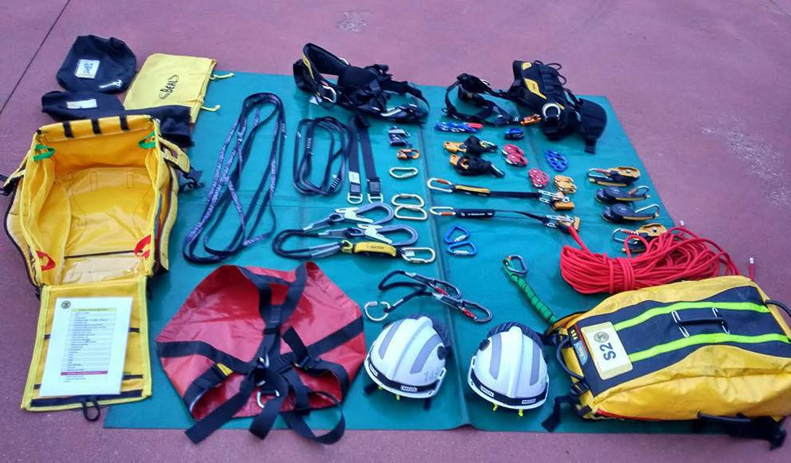

Materiales y miembros
Materiales
Los materiales que utilizaremos serán: un traje aislante, una manguera, cuerda, camión de bomberos, mochila de primeros auxilios, botas de montaña, nuestra identificación como bomberos licenciados, un walkie talkie, nuestro teléfono, casco de seguridad y localizador gps.
Miembros
La central esta constituida por 23 bomberos licenciados en los que destacan en capitán Sánchez Wilson y el sub capitán Nel Malden.